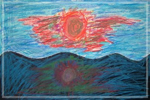

An essay from a good friend Ellen Dietterick
|
In Syracuse, NY in the fall of 1993, I held a very precious, beautiful baby girl in my arms. I cuddled her, kissed her tiny forehead and held her in my arms as long as I could. My precious, beautiful niece, Lily.... I loved her from the minute I saw her, I have loved her ever since and I will love her forever. Soon, she and her parents, Paul and Suh, moved back to Taiwan. A beautiful sister, Joyce, was born next in Taiwan. Pictures were sent to America of two lovely, healthy girls as they grew. Aunt Ellen sent matching dresses to them and other fun things, as they grew. Paul and Suh told them to work diligently on learning their English so they could travel to America to visit Aunt Ellen. Aunt Ellen, Alena and Beau are so excited that someday they will come visit! Then one horrible day the news reaches us that Lily is very ill. We pray and pray for her recovery. We search the internet for good doctors and new treatments to help cure our Lily. Lily takes all the medicines and the treatments. She valiantly fights the cancer. The doctors try their best to help cure her. She seems to be making progress but then the cancer comes back. We, her family
in America, think if Lily isn't strong enough to travel to Back in America we keep updated on her condition. At one point in time, the abdominal tumor has shrunk somewhat. We are cautiously optimistic. Lily is bravely fighting the cancer. Unfortunately, the next news we hear is not good. Soon it seems Lily is desperately ill , struggling to live so she can grow up. She does not give up. We, her family, do not give up. We hope and pray for miracles continuously. But alas, ultimately, the cancer is too strong. We are still hoping and praying for a miracle but then we find out Lily's struggle has ended. God has reached down to earth, gently lifted our precious Lily up to heaven and gathered her in His loving arms. My father and my husband, Paul, know that she is coming and are there to welcome her into their loving arms too. Now she is strong and healthy and happy, climbing mountains, gathering beautiful flowers, and putting together jigsaw puzzles in Heaven. My father and my Paul are with her now and will watch over her for all of eternity. We have a united family in Heaven and when our day comes to join them, it will be a glorious day indeed! Lily is now a beautiful, blissfully happy Angel in Heaven , surrounded by loving family members. Her life on earth was shortened by cancer because God wanted her beautiful presence in Heaven sooner. She is now bathed in Light, Comfort, and Peace with her loving Heaven family. We, her earth family, will miss her presence in our lives, but we are happy to know she is safe and at peace in Heaven. This is the story of our Precious, Beautiful, Beloved Angel Lily. |
|  |
•海邊的太陽 藍藍的天藍藍的海，緩緩的波浪盪漾著海天一線，陽光熱情的照著，海裡的倒影也跟著打招呼！ |
- 庭煒,你真的走了嗎?
- 蘋婆與莉莉
- 庭煒的桃花源記
- 生日
- 給你Lily
- Lily,你好棒!
- An essay from a good friend
- A letter from a Wilm's tumor expert
- A letter from Godfather
- 思念遙寄天空裡